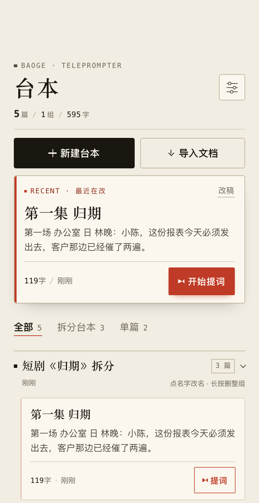
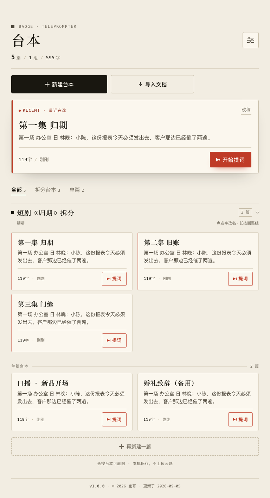
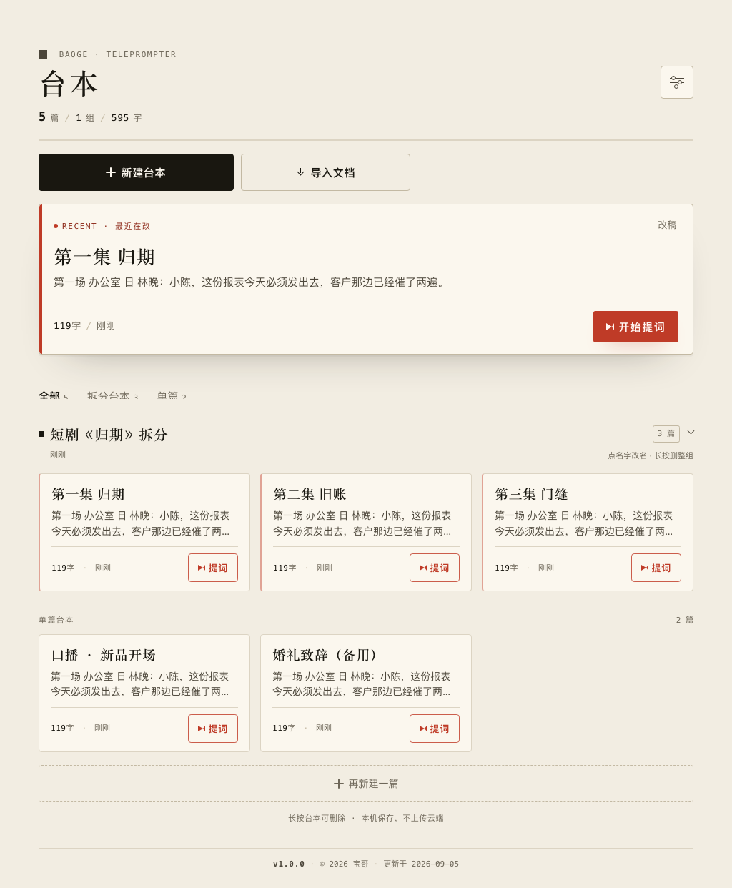
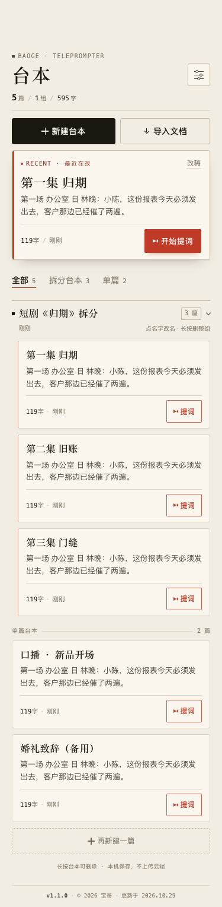
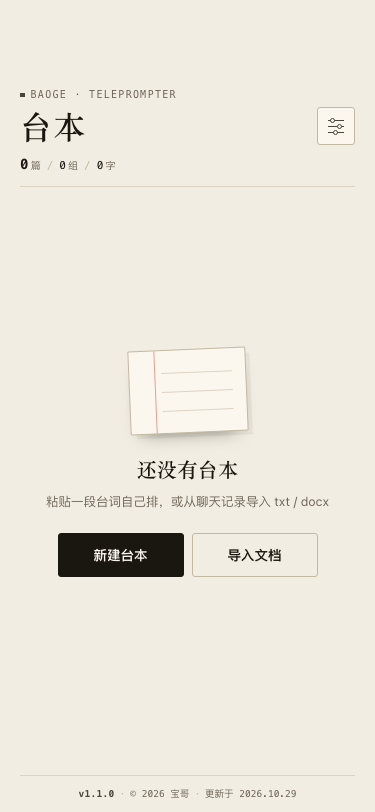
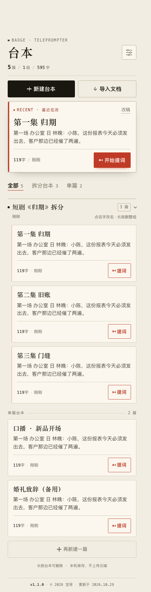
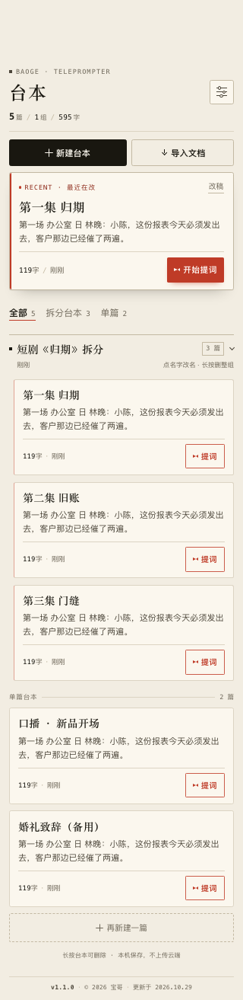

片场稿纸（Call Sheet）—— 把「台本库」做成一张场记单
不是「工具 App」，是一叠写好字的纸。整个首页用暖纸底、墨黑字、衬线标题、等宽数字、发丝线分隔，做成印刷品的版面感；朱红只留给「能开拍的东西」。
选这个方向不是审美偏好，是三个具体理由：
设计原则（全站口径）：约束比装饰更有设计感。整页只有一款主色（墨）、一款强调色（朱红）、两档字族（衬线标题／等宽数字）、一套 4–6px 圆角、一种入场动效。
重做前全页有 8 处红色（套准标、报头短线、文件夹方块、角色标签、页签下划线、书脊、按钮、版本号），红一多就不红了。现在收敛为 5 处，全部与「开拍」或「最新」语义绑定：
| 位置 | 语义 | 是否保留 |
|---|---|---|
| 焦点卡左书脊 | 这是你最近动过的稿子 | 保留 |
| RECENT 标签 + 圆点 | 同上，文字化 | 保留 |
| 开始提词 / 卡片提词 | 唯一行动号召 | 保留 |
| 当前页签下划线 | 当前所在分区 | 保留 |
| 报头短线 / 套准标 / 文件夹方块 / 角色标签 / 版本号 | 纯装饰 | 改中性色 |
数字一律等宽，保证「119 → 1,204 字」刷新时不抖动；标题一律衬线，正文一律无衬线，三档字体各司其职，不混用。
| 类别 | 取值 | 用法 |
|---|---|---|
| 间距 | 8 / 14 / 16 / 20 / 24 / 26 / 34 / 40 rpx | 卡片内 24–26，卡片间 20，分节前 34，页脚前 40 |
| 圆角 | 2 / 3 / 4 / 6 rpx | 标签 2、按钮 3–4、卡片与输入 6（印刷品是方的，不用药丸） |
| 描边 | 1rpx | 所有分隔线一律发丝线，不靠阴影堆层次 |
| 动效 | 340ms 入场 / 180ms 按压 | 只做一次，不循环；系统开启「减弱动态效果」时全部关闭 |

| 组件 | 关键尺寸 | 状态与行为 |
|---|---|---|
| 报头 | top = 状态栏 + 46px | 英文小标 10px／标题 32px／数字行 11px；右上角设置 38×38 |
| 主操作 | h 44px，gap 8px，1 : 1.15 | 新建＝墨黑实底，导入＝描边；按下 scale .99 |
| 焦点卡 | pad 13/14/11，书脊 3px | 整卡进提词；右上「改稿」进编辑（热区扩到 44px）；书脊入场自上而下画出 |
| 页签 | h 38px，下划线 1.5px | 文字 + 计数，不用药丸；切换时下划线从左展开 220ms |
| 文件夹分节 | 上 34rpx 细线 + 方块 5px | 点名字改名、长按删整组、点箭头收起（箭头热区 26×22px） |
| 台本卡 | pad 12/13/9，间距 20rpx | 整卡进编辑，右下「提词」直达提词页；正文两行截断 |
| 列表收尾 | h 44px 虚线框 | 滚到底也能新建，替代原来的吸顶工具栏 |
| 空态 | 稿纸 118×84，按钮宽 ≤260 | 打格稿纸 + 两条入口；内容在剩余空间内垂直居中 |
| 版权页 | 细线 + 10px 等宽 | 跟随内容流，不再 fixed |
这一轮最实的五处改动都在「结构」，不在皮肤：
| 问题 | 原因 | 改法 |
|---|---|---|
| 页脚压住列表 | 版本号用 position:fixed 悬在底部，永远盖住最后一屏 |
改成跟随内容流的版权页；滚到底自然结束 |
| 报头钻刘海／撞胶囊 | 页面切到 navigationStyle:custom 后从 y=0 开始画，原来的 26rpx 内边距不够 |
JS 读 statusBarHeight 算 headTop = 状态栏 + 46px，报头整体落在胶囊带下方 |
| 吸顶工具栏顶到状态栏 | position:sticky; top:0 在小程序里是贴屏幕顶，不是贴内容区顶 |
取消吸顶；列表末尾补「再新建一篇」虚线入口 |
| 平板右侧大片空白 | 宽屏用 rpx：768 屏上 1rpx=1.02px、1024 屏上 1rpx=1.37px，同一个 64rpx 标题会从 32px 涨到 87px |
断点内改用 px（物理尺寸稳定），列表 2 列 / 超宽 3 列 |
| 单篇看着像属于上面的文件夹 | 两组之间只有 8px 间距，没有边界 | 补一条「单篇台本 ——— 2 篇」分节线（只在同时存在文件夹与单篇时出现） |
| 档位 | 布局 | 单位 |
|---|---|---|
| ≤ 340px | 单列，收窄报头与内边距 | rpx 等比 |
| 341–599px | 单列（主场景） | rpx 等比 |
| 600–999px | 限宽 860，台本卡两列，文件夹整行 | px 固定 |
| ≥ 1000px | 限宽 980，台本卡三列 | px 固定 |


scaleX(0→1) 从左展开，切换分区时不闪烁。| 对比组合 | 实测对比度 | 标准 |
|---|---|---|
| 墨 / 纸 | 15.36 : 1 | AAA |
| 正文 / 卡片 | 8.75 : 1 | AAA |
| 次要文字 / 纸 | 4.80 : 1 | AA（≥4.5） |
| 白字 / 朱红按钮 | 5.43 : 1 | AA |
::before 把热区扩到 44×40 / 26×22，避免误触到相邻动作。prefers-reduced-motion，开启后入场与过渡全部关闭。safeArea.left/right，内容不会被挖孔切掉。手机四档的实际渲染（不是设计稿，是把真实的 .wxml + .wxss 机械翻译成 HTML 后截图）：




四台手机的取景框统一裁到 3:4（从顶部取景）；完整长页请看上方 02 节的 2× 大图。
| 项目 | 方法 | 结果 |
|---|---|---|
| 回归测试 | 49 套 test.js 全跑 | 49 / 49 通过，0 失败 |
| 新增契约测试 | index_layout.test.js · 28 条 | 通过 |
| 模板体检 | page_lint + wxml_lint | 0 告警（5 页 / 14 处 wx:for） |
| 视觉复核 | 6 档尺寸真实渲染截图 | 已逐张目视确认 |
| 预览保真 | 与真机盒模型对齐（border-box） | 已修正两处假象 |
这一轮花了不少时间在让截图可信上，因为前两版截图把两个 bug 藏住了：
--w=768 会让 rpx 真的变成 1.024px。view 被译成 div 后丢了 box-sizing:border-box。真机上每个 view 都是 border-box，预览里变成 content-box，带 padding 的卡片凭空多出 34px 宽度，50% 的两列装不下就各自独占一行。补上全局规则后两列才真的并排。getMenuButtonBoundingClientRect 有 ±2px 差异）。一句话总结：这一轮把首页从「能用」推到「有主张」——纸的隐喻、衬线+等宽的编辑感、只留一种强调色。功能一个没动，改动集中在版面、层级、触摸目标与响应式四件事上。